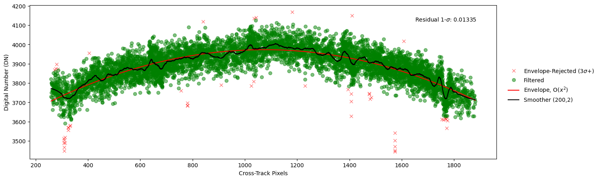
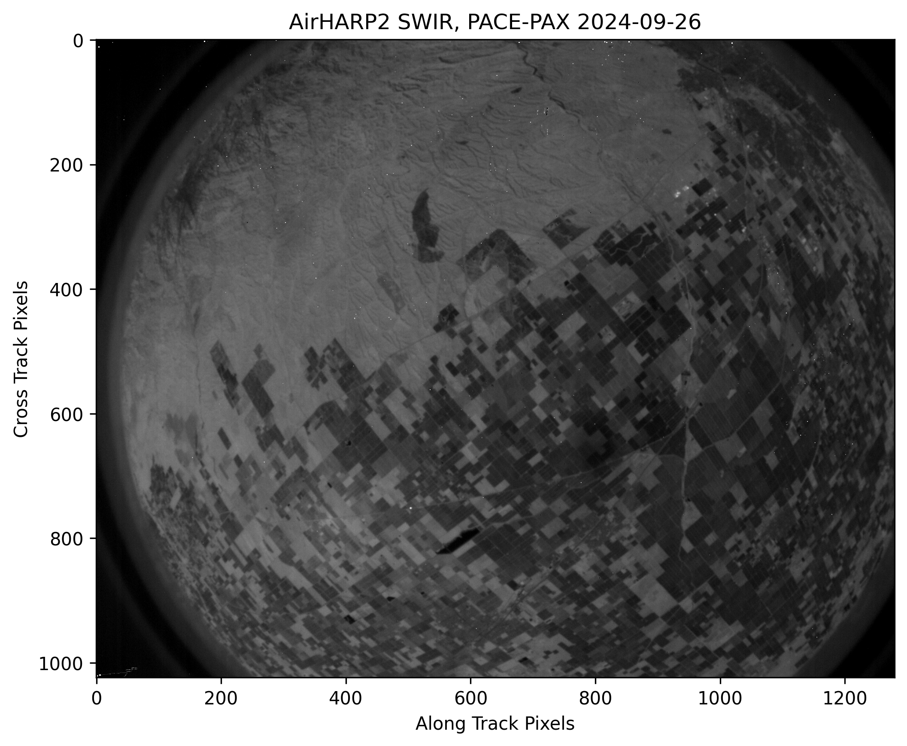
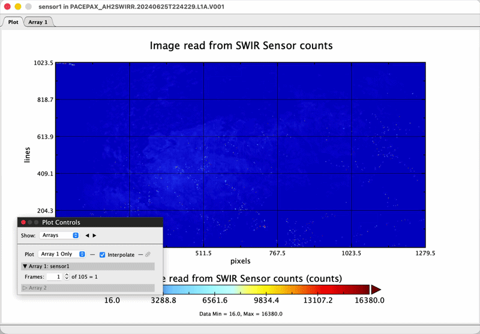

Software developer building scientific data pipelines and full-stack applications.
AirHARP2 SWIR calibration and Level 1A processing at UMBC’s Earth and Space Institute.
Open a project for its approach, selected output, and source links.
SWIR Flatfield Calibration
AirHARP2 SWIR sensor calibration · UMBC Earth and Space Institute · 2024–2025
Problem: Prepare SWIR sensor images for downstream Level 1A processing by characterizing response variation and correcting dark signal and pixel defects.
Contribution: Built modular Python tooling for dark-frame averaging and subtraction, composite generation across filter-wheel positions, quadratic-envelope flatfield characterization, outlier rejection, defect masking, and corrected-image generation.
Approach: Used cross-track and along-track profiles with ratio thresholding and Savitzky–Golay smoothing to support repeatable calibration runs and inspect fit quality.

Quadratic envelope fit used to characterize the sensor response.

Example image after flatfield mask application and first-order visual correction.
AirHARP2 SWIR processing · UMBC Earth and Space Institute
Problem: Turn raw SWIR TIFF frames and associated metadata into consistently organized Level 1A products for analysis and archival.
Contribution: Implemented capture-ID matching between image and metadata records, chronological processing, flight-leg detection from timestamp gaps, and segmentation into standard five-minute NetCDF4 granules.
Output: Frame-based image data organized with timestamps, sensor state, and navigation records to support downstream inspection and analysis.

Example sensor image rendered from a generated NetCDF4 granule.
Tools: Python, NumPy, Pandas, NetCDF4, Pillow, multiprocessing, and XML parsing.
Problem: Make flight-campaign VNIR Level 1A data easier to review for coverage and data quality without manually inspecting each NetCDF4 granule.
Contribution: Built a modular Python command-line workflow that discovers VNIR L1A NetCDF4 files, reads their time coverage and sensor metadata, and creates quicklook plots for flight legs or requested time windows.
Output: PNG quicklooks combine pushbroom measurements at four fixed wavelengths with UTC time and cross-track pixel axes. An optional sensor-temperature panel adds instrument context to the same view.
Example leg-wise VNIR quicklook showing spectral channels and sensor temperature over time.
Contributed software for AirHARP2 SWIR calibration and Level 1A processing in support of Earth-observation research. ESI works across Earth observation and atmospheric science, including aerosols, clouds, and climate.
Youth travel soccer coach with the Soccer Association of Columbia. Coaching focuses on player development, teamwork, communication, and continuous learning. Earned a USSF National D license and received SAC Coach of the Year recognition.
University of Maryland Global Campus — BS, Computer Science (Jan 2021–Dec 2025)
University of Maryland Global Campus — Undergraduate Certificate, Vulnerability Assessment (Jan 2022–May 2023)
University of Maryland, Baltimore County — Mathematics and Computer Science (Fall 2009–Spring 2011)
About
I’m a software developer focused on scientific data pipelines and full-stack engineering. At UMBC’s Earth and Space Institute, I worked on AirHARP2 SWIR processing from sensor calibration through Level 1A product generation.
I enjoy building clear, repeatable tools that help turn complex data into dependable outputs. My work spans image processing, metadata matching, time-based data organization, and NetCDF4 products.